Bài toán dữ liệu lớn và mô hình thuật toán
Yêu cầu dữ liệu lớn chỉ thành bài toán thuật toán khi đã chốt đầu ra, biểu diễn, giới hạn tài nguyên, mức chính xác.
Giải thuật nền tảng của Khoa học dữ liệu
Học kỳ 1 · Năm học 2026–2027
Trường Đại học Công nghệ · Đại học Quốc gia Hà Nội
Tiên quyết và quy ước
Nhắc lại: tiên quyết UET.CS1058.
Nhắc lại: $N$ phần tử có $\binom N2=N(N-1)/2$ cặp không thứ tự.
Nhắc lại: giao $S\cap T$ là phần chung; hợp $S\cup T$ đếm mỗi phần tử một lần.
Nhắc lại: độc lập thì nhân xác suất; kỳ vọng tổng bằng tổng kỳ vọng.
Ký hiệu: $N$ tài liệu, tập $C_i$ hữu hạn, không rỗng; cặp $i<j$; ngưỡng $\tau$; $R$ là tập cặp đạt ngưỡng.
Mục tiêu học tập
- Nêu đầu vào, đầu ra và tài nguyên bị giới hạn của một bài toán dữ liệu lớn.
- Đặc tả tìm cặp gần trùng; chứng minh thuật toán xét mọi cặp trả đúng $R$.
- Đếm chi phí xét mọi cặp; phân biệt tính toán, bộ nhớ, đọc ghi, mạng.
- Gắn mỗi giới hạn đã gặp với một nhóm Bài 02–15 và kiến thức nền cần ôn.
- Tính kỳ vọng số trùng ngẫu nhiên; nêu điều chưa suy ra được từ mẫu trùng.
Nội dung
- Tổng hợp và tìm kiếm dữ liệu web
- Dòng dữ liệu, nén và truy vấn trên đĩa
- Đặc tả và đánh giá thuật toán
- Năm nhóm thuật toán và cách học
- Mẫu trùng ngẫu nhiên và suy luận
- Tổng kết và tự kiểm tra
- Bài tập vận dụng
Đọc trước: Leskovec, Rajaraman, Ullman, Mining of Massive Datasets (MMDS), ấn bản 3, §1.2, §3.1; Blum, Hopcroft, Kannan, Foundations of Data Science, Chương 1–2.
Vấn đề trung tâm
Nhu cầu: trả mọi cặp đạt ngưỡng trong $N=10^6$ tài liệu.
- Dữ liệu vượt bộ nhớ: chi phí tính bằng số khối đọc ghi.
- Phép kiểm chính xác: xét mọi cặp trả đúng $R$ sau $N(N-1)/2$ lần kiểm.
- Giảm số cặp chỉ đủ khi không bỏ sót cặp đạt ngưỡng.
- Lưu trú độc lập: kỳ vọng khoảng $249\,750$ biến cố trùng ngẫu nhiên.
Tính tổng kích thước trang web theo máy chủ
Đầu vào: máy chủ và kích thước (byte) của mỗi trang trong kho.
Đầu ra: tổng theo máy chủ; ở đây a.vn 55, b.vn 25, c.vn 0 byte.
| Máy chủ | Kích thước trang (byte) |
|---|
| a.vn | 40 |
| b.vn | 25 |
| a.vn | 15 |
| c.vn | 0 |
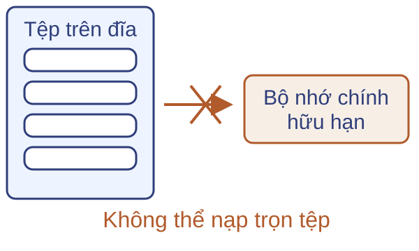
Tệp bản ghi lớn hơn bộ nhớ thì không nạp trọn để cộng một lần.
Đếm số lần xuất hiện của từng từ
Đầu vào: kho tài liệu chia trên nhiều máy.
Đầu ra: số lần xuất hiện trong toàn kho của mỗi từ $w$.
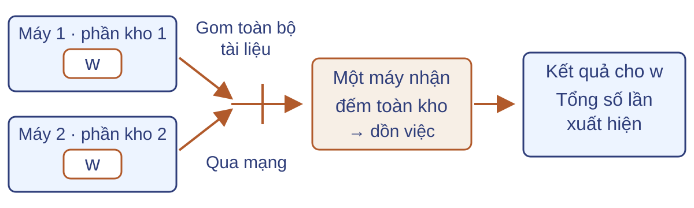
Gom cả kho về một máy tốn đường truyền và dồn việc vào máy đó.
Tính điểm quan trọng của trang web
Đầu vào: các trang web và liên kết giữa chúng.
Đầu ra: điểm quan trọng của mỗi trang, hỗ trợ sắp kết quả tìm kiếm.
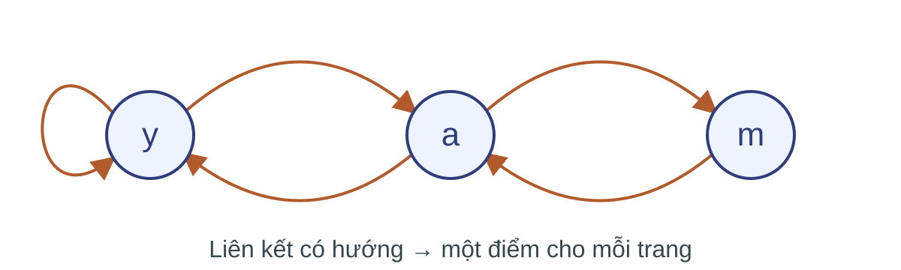
Điểm một trang phụ thuộc điểm các trang trỏ đến nó, nên phải cập nhật qua nhiều vòng.
Ưu tiên kết quả tìm kiếm theo chủ đề
Đầu vào: truy vấn “Jaguar”, chủ đề đã xác định là ô tô.
Đầu ra: kết quả tìm kiếm ưu tiên các trang về xe.
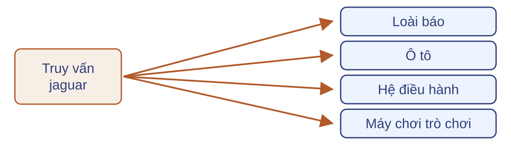
Lưu một bộ điểm toàn web riêng cho từng người dùng tốn quá nhiều bộ nhớ.
Hạn chế liên kết rác trong xếp hạng
Đầu vào: đồ thị liên kết có cụm trang do một bên tạo, cùng trỏ tới đích.
Đầu ra: điểm hạng ít chịu ảnh hưởng của các liên kết này.
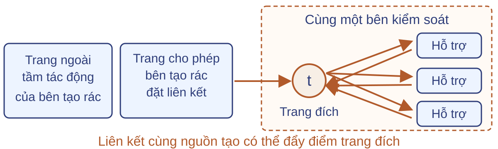
Số liên kết hay điểm truyền tới trang đích chưa đủ đánh giá độ tin cậy.
Tìm các cặp tài liệu gần trùng
Đầu vào: kho web có bản sao chỉ khác một phần văn bản.
Đầu ra: các cặp tài liệu có độ tương đồng đạt ngưỡng đã chọn.
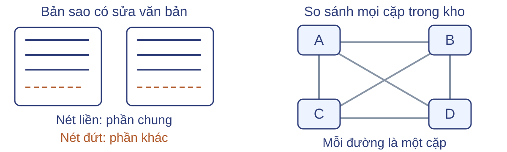
Với $N=10^6$ tài liệu, xét mọi cặp phải kiểm $\binom N2=499\,999\,500\,000$ cặp.
Tìm đoạn tài liệu bằng véc-tơ truy vấn
Đầu vào: đoạn tài liệu và truy vấn mã hóa thành véc-tơ cùng số chiều.
Đầu ra: $k$ đoạn có véc-tơ gần truy vấn nhất theo khoảng cách đã chọn.
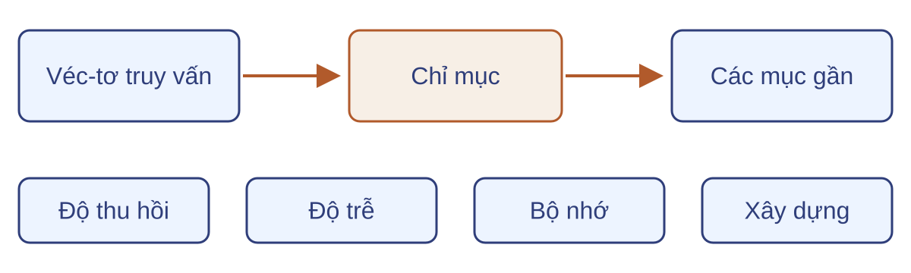
Kho 10 tỷ véc-tơ 3072 chiều: quét hết cần 10 tỷ phép tính khoảng cách mỗi truy vấn.
Câu hỏi về bảy bài toán trên kho web
Câu hỏi: nêu đầu vào, đầu ra và trở ngại của cách làm trực tiếp.
- Tổng kích thước theo máy chủ khi tệp bản ghi vượt bộ nhớ.
- Mọi cặp gần trùng trong $10^6$ tài liệu.
- $k$ đoạn gần một véc-tơ truy vấn trong 10 tỷ véc-tơ.
2.Dòng dữ liệu, nén và truy vấn trên đĩa
Muốn tiếp nhận, lưu và khai thác dữ liệu lớn, phải tính đến bộ nhớ hữu hạn và chi phí đọc đĩa.
Dòng dữ liệu · Nén văn bản và ảnh · Sắp xếp tệp lớn · Chỉ mục · Nối bảng
Bộ nhớ, dung lượng và số khối đọc ghi
| Nhóm bài toán | Việc cần làm | Tài nguyên bị giới hạn |
|---|
| Dữ liệu đang đến | giữ mẫu, lọc, thống kê | bộ nhớ hữu hạn; bản ghi tiếp tục đến |
| Lưu và khôi phục | nén văn bản, ảnh | dung lượng; thông tin cần giữ |
| Dữ liệu trên đĩa | sắp xếp, tra cứu, nối bảng | số khối đọc ghi; số lần đọc lại |
Giữ mẫu truy vấn và lọc thư đến
Đầu vào: nhật ký truy vấn; thư đến kèm địa chỉ gửi.
Đầu ra: lịch sử của một mẫu người dùng; quyết định nhận thư theo danh sách cho phép.
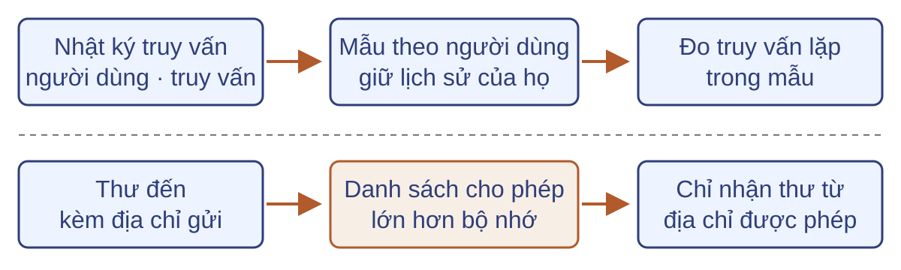
Lưu hết lịch sử tốn bộ nhớ; tra danh sách lớn trên đĩa cho từng thư làm chậm xử lý.
Đếm người dùng và lượt truy cập gần đây
Đầu vào: nhật ký truy cập.
Đầu ra: số người dùng khác nhau và số lượt trong khoảng thời gian gần nhất.
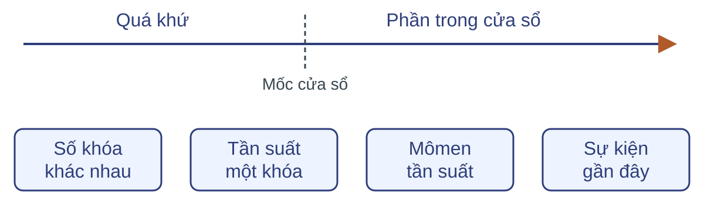
Đếm người dùng phải nhận ra lần quay lại; cửa sổ phải bỏ bản ghi hết hạn.
Nén dữ liệu để lưu và khôi phục
Nhu cầu: lưu dữ liệu để đọc lại; một số đếm không tái tạo được nhật ký.
Văn bản
Khôi phục đúng từng ký hiệu và thứ tự.
Ảnh
Ảnh khôi phục được khác ảnh gốc trong mức chất lượng yêu cầu.
Lưu văn bản với ít dung lượng hơn
Đầu vào: tệp văn bản, ví dụ chuỗi aabaacabcabcb.
Đầu ra: dữ liệu mã và thông tin giải mã khôi phục đúng chuỗi gốc.
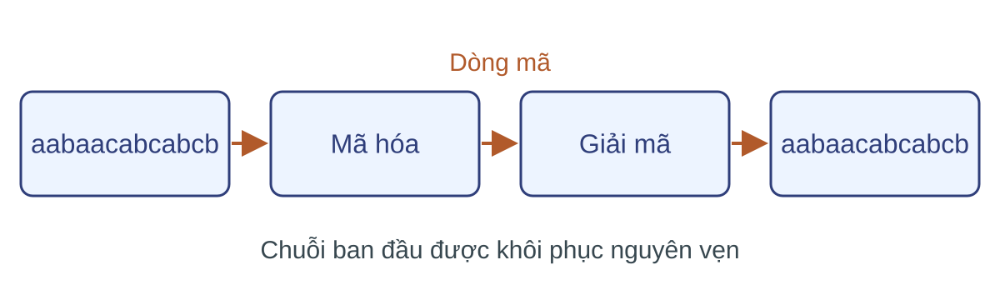
Mã và thông tin giải mã đều chiếm dung lượng.
Giảm dung lượng ảnh với sai số cho phép
Đầu vào: ảnh và mức chất lượng ứng dụng yêu cầu.
Đầu ra: mã ảnh nhỏ hơn; ảnh khôi phục đạt mức chất lượng ấy.
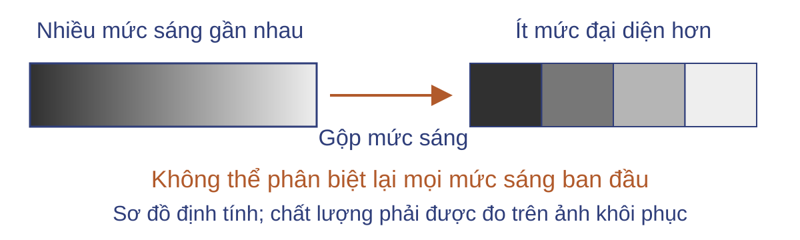
Phải báo cùng lúc dung lượng mã và sai khác của ảnh khôi phục.
Xử lý và truy vấn dữ liệu trên đĩa
Khối là đơn vị đọc ghi giữa đĩa và bộ nhớ.
Tệp lớn hơn bộ nhớ được xử lý từng phần.
- Sắp xếp: đưa bản ghi về thứ tự khóa.
- Tra cứu: lấy bản ghi thỏa điều kiện, không quét hết.
- Nối bảng: ghép dữ liệu từ hai tệp.
Mỗi khối đọc hoặc ghi đều tính chi phí.
Sắp xếp tệp lớn theo khóa
Đầu vào: tệp bản ghi chưa có thứ tự, lớn hơn bộ nhớ.
Đầu ra: tệp gồm đủ các bản ghi ấy theo khóa tăng dần, kể cả khóa lặp.
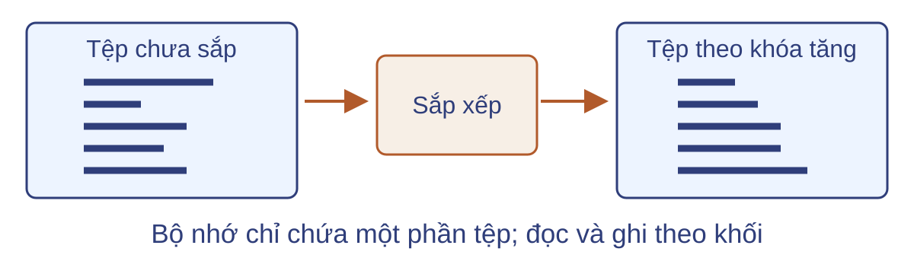
Đọc và ghi lại tệp nhiều lần làm tăng chi phí dù số phép so sánh ít.
Tìm hồ sơ giảng viên theo mã hoặc lương
Đầu vào: bảng hồ sơ giảng viên; một mã, hoặc một khoảng lương.
Đầu ra: mọi hồ sơ có mã đã cho, hoặc có lương trong khoảng.
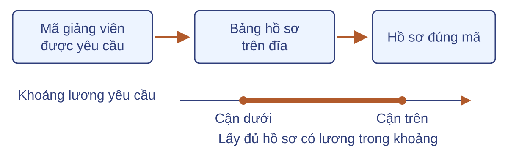
Quét cả bảng cho mỗi yêu cầu đọc nhiều dữ liệu thừa.
Tìm tài liệu chứa đồng thời hai từ khóa
Đầu vào: kho tài liệu và hai từ khóa.
Đầu ra: mọi tài liệu chứa cả hai từ.
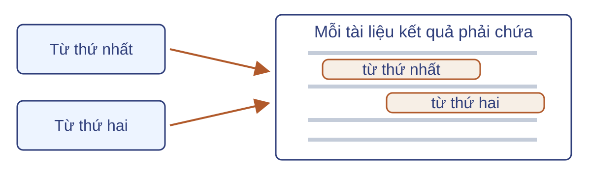
Đọc từng tài liệu cho mỗi truy vấn lặp lại công việc trên cả kho.
Tìm đối tượng giao vùng trên bản đồ
Đầu vào: các đối tượng hình học và một vùng bản đồ.
Đầu ra: các đối tượng nằm một phần hoặc toàn bộ trong vùng.
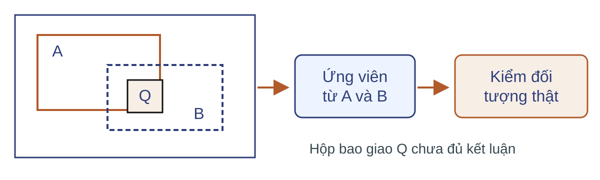
Hộp bao giao vùng chỉ cho ứng viên; vẫn phải kiểm hình thật.
Ghép sinh viên với các môn đã đăng ký
Đầu vào: bảng sinh viên 100 khối, bảng đăng ký 400 khối; bộ nhớ 20 khối.
Đầu ra: mọi cặp hồ sơ sinh viên và lượt đăng ký cùng mã sinh viên.
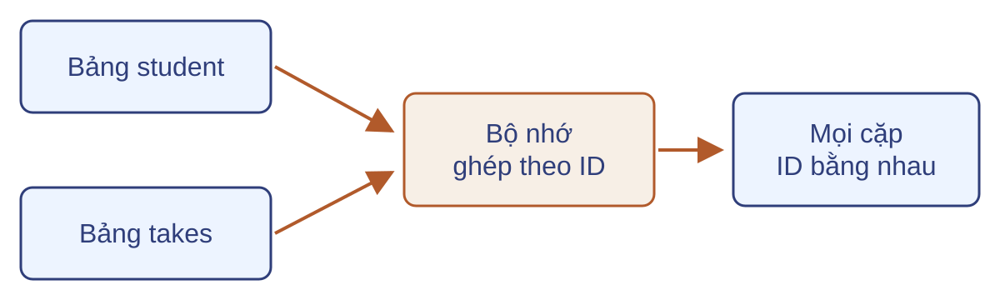
Quét lại bảng đăng ký cho từng sinh viên đọc cùng dữ liệu nhiều lần.
Câu hỏi về dòng, nén và truy vấn trên đĩa
Câu hỏi:
- Giải thích vì sao một số đếm người dùng không thay được bản nén của nhật ký.
- Hai bảng 100 và 400 khối, bộ nhớ 20 khối: nêu việc không làm được, vì sao quét lại tốn khối.
- Nén ảnh có mất thông tin: nêu hai đại lượng phải báo cùng nhau.
3.Đặc tả và đánh giá thuật toán
Muốn chọn lời giải cho bài toán tìm cặp gần trùng, phải đặc tả đầu ra rồi xét tính đúng và chi phí.
Độ tương đồng Jaccard · Đặc tả · Xét mọi cặp · Tính đúng · Tiêu chí chi phí
Phân tích thuật toán xử lý dữ liệu lớn
Đặc tả
Xác định miền đầu vào, kết quả cần trả, mức chính xác yêu cầu.
Đánh giá
Kiểm tính đúng, chi phí tài nguyên, chất lượng kết quả.
Bài toán phân tích: tìm các cặp tài liệu gần trùng trong kho web.
Bài toán tìm cặp tài liệu gần trùng
Nhu cầu: nhận ra bản sao đổi tên máy chủ hoặc liên kết nhưng giữ nội dung chính.
So bằng nhau từng ký tự không nhận ra các cặp này.
Đầu ra: các cặp chia sẻ đủ nhiều đoạn văn bản; độ đo và ngưỡng định nghĩa “đủ nhiều”.
Độ tương đồng Jaccard
Biểu diễn mỗi tài liệu bằng tập các đoạn ký tự (shingle) liên tiếp cùng độ dài.
Ví dụ. $S$, $T$ có 3 phần tử chung, 8 phần tử trong hợp.
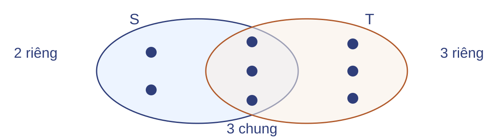
Định nghĩa. Jaccard của hai tập hữu hạn, không rỗng là $J(S,T)=|S\cap T|/|S\cup T|$; ở đây $3/8$.
Kết luận: $J(S,T)\ge\tau$ khi và chỉ khi $\tau\le3/8$.
Đặc tả tìm cặp gần trùng
Đầu vào: $N$ tập hữu hạn, không rỗng $C_1,\ldots,C_N$; ngưỡng $\tau\in[0,1]$.
Đầu ra:
$R=\{(i,j):1\le i<j\le N,\ J(C_i,C_j)\ge\tau\}$
Trả đủ mọi cặp đạt ngưỡng, không trả cặp sai; mỗi cặp đúng một lần nhờ $i<j$.
Trường hợp biên: $N<2$ cho $R=\varnothing$.
Ví dụ: thứ tự xét cặp
$N=4$: liệt kê các cặp theo thứ tự hai vòng lặp $i<j$.
$(1,2),\ (1,3),\ (1,4),\ (2,3),\ (2,4),\ (3,4)$
Với $N=2$, $C_1=S$, $C_2=T$: chỉ xét $(1,2)$, $J=3/8$.
Kết luận: xuất $(1,2)$ khi $\tau\le3/8$; ngược lại kết quả rỗng.
Thuật toán: xét mọi cặp
Đầu vào: $C_1,\ldots,C_N$ và $\tau$ như đặc tả. Đầu ra: các cặp của $R$, xuất dần.
nếu N < 2: kết thúc với kết quả rỗng
cho i = 1,...,N−1:
cho j = i+1,...,N:
tính chính xác J(Cᵢ, Cⱼ)
nếu J(Cᵢ, Cⱼ) ≥ τ:
xuất cặp (i, j)
Câu hỏi: nếu vòng trong bắt đầu từ $j=1$, xác định phần đặc tả bị vi phạm.
Các tiêu chí đánh giá
| Nhóm | Tiêu chí |
|---|
| Kết quả | tính đúng; chất lượng gần đúng |
| Tài nguyên khi chạy | khối lượng tính toán; bộ nhớ làm việc |
| Tài nguyên dữ liệu | đọc ghi và lượt quét; truyền qua mạng; dung lượng lưu trữ |
| Vận hành | độ trễ truy vấn; chi phí xây dựng; chi phí cập nhật |
Chỉ so sánh khi đã nêu mô hình chi phí và yêu cầu đầu ra.
Tính đúng: bất biến của xét mọi cặp
Mệnh đề. Với tập hợp lệ và phép kiểm Jaccard chính xác, thuật toán trả đúng $R$, mỗi cặp một lần.
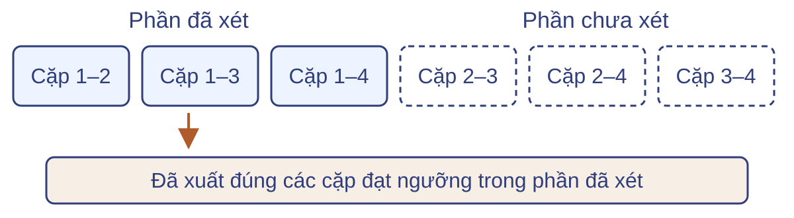
Bất biến: sau mỗi bước, kết quả đã xuất gồm đúng các cặp đạt ngưỡng trong phần đã xét.
Tính đúng: khởi tạo, duy trì, kết thúc
| Bước | Lập luận |
|---|
| Khởi tạo | chưa xét cặp nào, chưa xuất cặp nào |
| Duy trì | cặp mới chưa từng xét, được xuất khi và chỉ khi đạt ngưỡng; kết quả cũ không đổi |
| Kết thúc | sau $N(N-1)/2$ cặp, phần đã xét là toàn miền, kết quả bằng $R$ |
Điều kiện dừng: hai vòng lặp hữu hạn.
Trường hợp biên: $N<2$ trả rỗng ngay.
Chi phí: khối lượng tính toán
Mô hình: đếm phép so sánh phần tử; mỗi tập là danh sách đã sắp, tối đa $L$ phần tử.
| Bước | Số lần | Chi phí mỗi lần | Đóng góp |
|---|
| Kiểm một cặp (trộn hai danh sách) | ${N(N-1)/2}$ | $\le2L$ phép so sánh | $\le N(N-1)L$, tức $O(N^2L)$ |
Với $N=10^6$: $499\,999\,500\,000$ lần kiểm.
Kết luận: $O(N^2L)$ là cận trên trường hợp xấu, chưa tính tạo biểu diễn và ghi kết quả.
Bộ nhớ làm việc
Bộ nhớ làm việc là dung lượng cần giữ đồng thời khi thuật toán chạy.
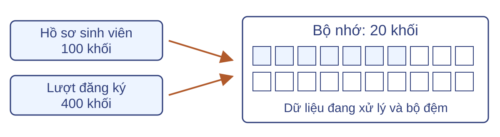
Bảng 100 hoặc 400 khối không vừa 20 khối; phải xử lý từng phần, chừa chỗ bộ đệm.
Đọc ghi và số lượt quét
Chi phí đọc ghi là số khối chuyển giữa đĩa và bộ nhớ.
Một lượt quét đọc hết tệp; mỗi lượt đọc lại đều được tính.
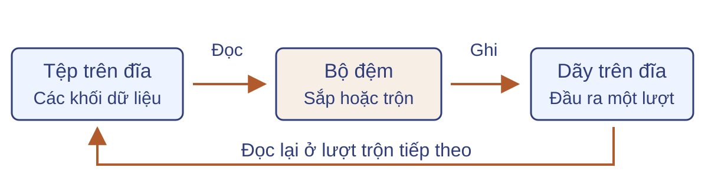
Ít phép so sánh chưa bảo đảm ít khối đọc ghi.
Dữ liệu truyền qua mạng
Chi phí mạng là lượng dữ liệu trao đổi giữa các máy để hoàn thành tác vụ.
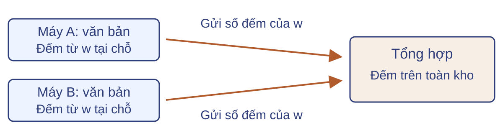
Gửi số đếm thay văn bản có thể giảm dữ liệu truyền; vẫn phải tránh tính trùng khi chạy lại.
Độ trễ truy vấn
Độ trễ là thời gian từ khi nhận truy vấn đến khi trả kết quả.
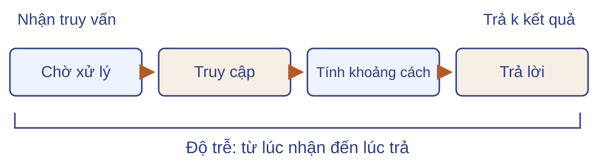
Độ trễ phải báo cùng chất lượng kết quả và tải truy vấn.
Chi phí xây dựng chỉ mục
Chi phí xây dựng chỉ mục là thời gian và bộ nhớ lớn nhất khi tạo chỉ mục.
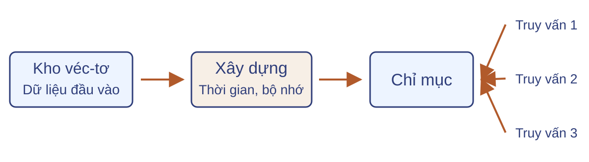
Độ trễ truy vấn thấp không xóa chi phí chuẩn bị.
Chi phí cập nhật dữ liệu
Chi phí cập nhật là công việc sửa dữ liệu và các cấu trúc phụ thuộc.
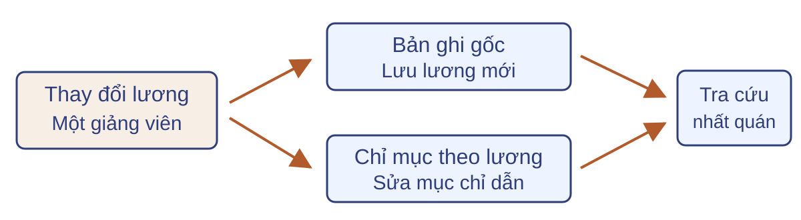
Chỉ sửa bản ghi mà không sửa chỉ mục theo lương thì truy vấn khoảng có thể trả mục cũ.
Dung lượng lưu trữ
Dung lượng lưu trữ là chỗ chiếm bởi dữ liệu đã lưu và thông tin phụ trợ.
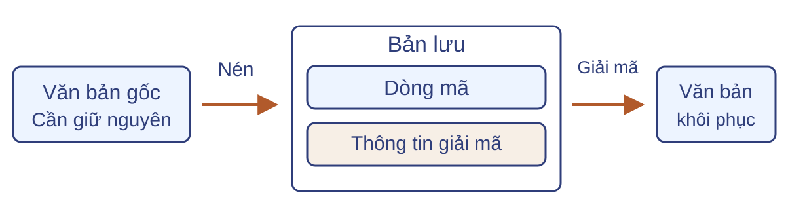
Nén văn bản phải tính cả mã và thông tin giải mã; bản khôi phục bằng văn bản gốc.
Chất lượng kết quả gần đúng
Với tìm $k$ hàng xóm gần nhất, độ thu hồi tại $k$ là tỷ lệ hàng xóm thật được trả lại.
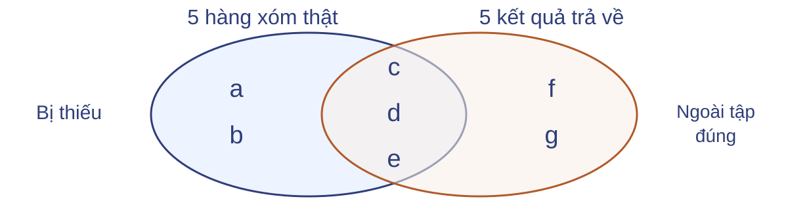
$\operatorname{recall@}5=\dfrac35$
Kết luận: hai kết quả $f,g$ không bù được hai hàng xóm thật $a,b$ bị thiếu.
Giảm ứng viên và nguy cơ bỏ sót
Cặp ứng viên là cặp được chọn để kiểm Jaccard chính xác.
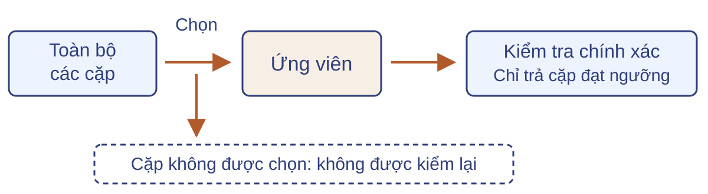
Câu hỏi: xác định hậu kiểm từng ứng viên có đủ bảo đảm trả mọi cặp đạt ngưỡng không.
4.Năm nhóm thuật toán và cách học
Muốn biết mỗi bài sau giải giới hạn nào và cần nền gì, phải đối chiếu phương pháp với bài toán đã gặp.
Năm nhóm Bài 02–15 · Phương pháp đại diện · Kiến thức nền · Sản phẩm học tập · Trách nhiệm dữ liệu
Học phần và năng lực cần đạt
UET.DSE2053 · 3 tín chỉ · Học kỳ 1, 2026–2027
| Năng lực | Ví dụ với cặp tài liệu gần trùng |
|---|
| Giải thích | nêu ý nghĩa độ tương đồng Jaccard |
| Lựa chọn | so số cặp đối chiếu và nguy cơ bỏ sót |
Năm nhóm bài của học phần
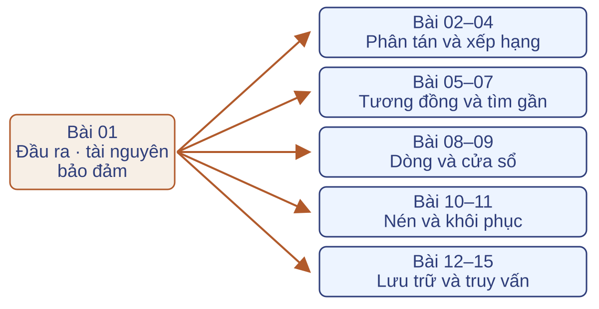
MapReduce: gom kết quả theo khóa
Bài 02: đếm số lần xuất hiện của mỗi từ trong kho trên nhiều máy.
Khóa là từ cần đếm; các số đếm cùng khóa được gom thành kết quả toàn kho.
Phải giữ đủ mỗi đóng góp và tránh đếm trùng khi chạy lại.
PageRank: tính điểm theo liên kết
Bài 03–04: tính điểm từ đồ thị liên kết để hỗ trợ xếp kết quả tìm kiếm.
PageRank truyền một phần điểm theo liên kết; phần còn lại phân theo bước nhảy ngẫu nhiên.
Bài 04: ưu tiên trang về ô tô cho “Jaguar”; TrustRank dùng trang đã xác nhận tin cậy.
MinHash và LSH: chọn cặp cần đối chiếu
Bài 05: chữ ký MinHash; Bài 06: phân dải LSH để chọn cặp ứng viên.
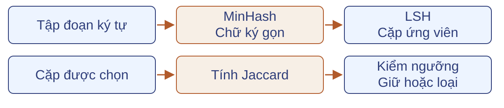
MinHash
Chữ ký là dãy giá trị đại diện gọn cho tập đoạn ký tự.
Băm nhạy cảm theo tính cục bộ (LSH)
Chọn từ chữ ký các cặp có khả năng tương đồng cao.
Cặp có Jaccard $3/8$ chỉ được hậu kiểm khi là ứng viên.
Chỉ mục cho truy vấn véc-tơ
Bài 07: tìm đoạn tài liệu gần véc-tơ truy vấn mà không quét lại toàn kho.
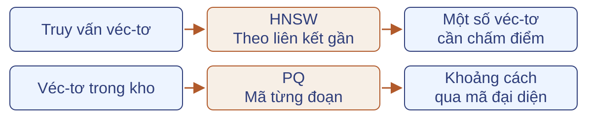
HNSW (đồ thị thế giới nhỏ phân tầng): tìm từ tầng thưa xuống tầng chi tiết.
Lượng tử hóa tích (PQ): thay từng đoạn véc-tơ bằng mã của một tâm đại diện.
Lấy mẫu và lọc trên dòng dữ liệu
Bài 08: giữ một phần lịch sử truy vấn hoặc lọc địa chỉ thư trước khi tra danh sách lớn.
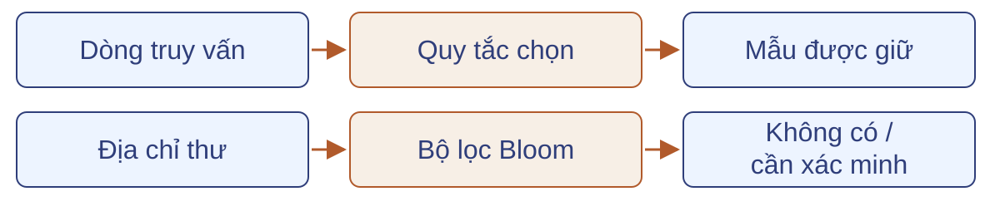
Lấy mẫu
Giữ dữ liệu đại diện theo đơn vị đã chọn.
Bộ lọc Bloom
Trả “chắc chắn không có” hoặc “có thể có”, cần xác minh.
Cấu trúc gọn cho thống kê dòng
Bài 09: giữ trạng thái gọn đủ trả lời truy vấn, không lưu toàn bộ lịch sử.
| Đại lượng cần tính | Phương pháp và ý tưởng |
|---|
| Số người dùng khác nhau | Flajolet–Martin: dấu hiệu từ giá trị băm |
| Số lần một khóa xuất hiện | Count-Min: nhiều hàng bộ đếm chia sẻ |
| Số bit 1 trong cửa sổ | DGIM: nhóm bit 1 có mốc thời gian |
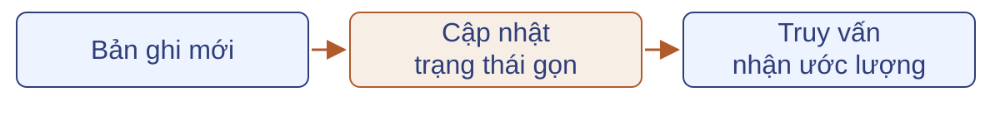
Nén theo ký hiệu, mẫu lặp và ảnh
Bài 10–11: giảm dung lượng lưu, với yêu cầu khôi phục đã xác định.
| Dữ liệu và phương pháp | Ý tưởng cần học |
|---|
| Ký hiệu · Huffman, mã hóa số học | dùng phân phối ký hiệu để tạo mã |
| Đoạn lặp · LZ77, LZ78, LZW | thay đoạn đã biết bằng tham chiếu |
| Ảnh · JPEG có lượng tử hóa | biến đổi, làm tròn hệ số, mất chi tiết |
Tổ chức dữ liệu để giảm đọc ghi
Bài 12–15: xử lý tệp và truy vấn khi dữ liệu không vừa bộ nhớ.
| Bài toán đã gặp | Cách tổ chức sẽ học |
|---|
| Sắp tệp theo khóa · Bài 12 | sắp từng phần rồi trộn các dãy |
| Tra mã, khoảng lương · Bài 13 | cây B+ theo miền khóa; băm cho khóa bằng |
| Từ khóa, vùng bản đồ · Bài 14 | chỉ mục đảo; R-tree nhóm hộp bao |
| Sinh viên và đăng ký · Bài 15 | nối trộn theo thứ tự; nối băm theo khóa |
Kiến thức nền dùng ở từng nhóm bài
| Nhóm bài | Kiến thức được dùng vào việc gì |
|---|
| Phân tán và xếp hạng | khóa–giá trị để gom; đồ thị, ma trận để truyền điểm |
| Tương đồng và tìm gần | tập hợp cho Jaccard; véc-tơ, khoảng cách |
| Dòng và cửa sổ | xác suất, kỳ vọng cho mẫu và ước lượng |
| Nén và khôi phục | cây, phân phối ký hiệu; chuỗi cho đoạn lặp |
| Lưu trữ và truy vấn | cây, băm và khối dữ liệu để tổ chức truy cập |
Sản phẩm khi phân tích thuật toán
Với bài toán cặp gần trùng, mỗi kỹ năng có một sản phẩm kiểm tra được.
| Kỹ năng | Sản phẩm trên ví dụ đã học |
|---|
| Đặc tả | tập kết quả gồm đúng, đủ các cặp đạt ngưỡng |
| Chạy tay | hai tài liệu $S,T$: xét cặp $(1,2)$, kiểm ngưỡng |
| Lập luận, phân tích | bất biến trên cặp đã xét; số cặp nhân chi phí một cặp |
| Triển khai, kiểm thử | mã nguồn; ca ít hơn hai tài liệu, ngưỡng biên |
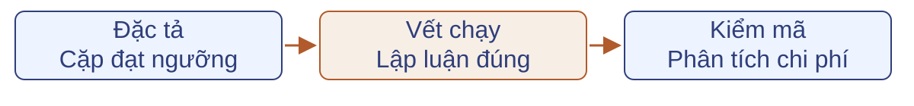
Báo cáo chất lượng và hiệu năng
Nhắc lại: truy vấn véc-tơ có recall@5 $=3/5$ (5 hàng xóm thật, giữ được 3).
So hiệu năng còn cần độ trễ và bộ nhớ đo cùng điều kiện.
Báo cáo kèm dữ liệu, tập truy vấn, tham số, thiết bị và cách đo.
Tự học, hợp tác và trách nhiệm dữ liệu
| Cách làm | Biểu hiện cụ thể trong học phần |
|---|
| Tự học và phản biện | ghi bước chưa hiểu; thử phản ví dụ nhỏ |
| Hợp tác có ghi nhận | ghi nguồn và phần đóng góp |
| Báo cáo trung thực | giữ trường hợp bỏ sót; nêu giả thiết |
| Dùng dữ liệu có trách nhiệm | dữ liệu được phép; không suy ý định từ mẫu trùng |
Kết luận: Jaccard đạt ngưỡng chưa đủ căn cứ kết luận có hành vi sao chép.
Câu hỏi về nhóm bài và kiến thức nền
Câu hỏi:
- Ghép mỗi giới hạn với nhóm bài: $499\,999\,500\,000$ cặp; bảng 400 khối với bộ nhớ 20 khối; bản ghi đến liên tục.
- Nêu một phần kiến thức nền cần ôn cho mỗi nhóm đã ghép.
5.Mẫu trùng ngẫu nhiên và suy luận
Muốn dùng mẫu trùng tìm được làm căn cứ, phải ước lượng số trùng ngẫu nhiên theo mô hình nền.
Hồ sơ lưu trú · Mô hình độc lập · Đơn vị đếm · Kỳ vọng · Giới hạn kết luận
Tìm mẫu trùng trong hồ sơ lưu trú
Nhu cầu: tìm dấu hiệu hoạt động phối hợp từ hồ sơ lưu trú.
Đầu vào: các bản ghi người, ngày, khách sạn.
Mẫu cần tìm là hai người cùng khách sạn trong hai ngày khác nhau.
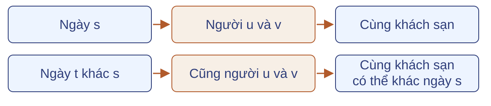
Nhiều phép thử có thể tạo nhiều trùng ngẫu nhiên.
Mô hình lưu trú không phối hợp
| Ký hiệu | Giá trị và ý nghĩa |
|---|
| $P$ | $10^9$ người |
| $T$ | $1000$ ngày quan sát |
| $H$ | $10^5$ khách sạn |
| $q$ | $0{,}01$: xác suất một người lưu trú trong một ngày |
Giả thiết: khi lưu trú, mỗi người chọn đều một trong $H$ khách sạn; độc lập giữa người và ngày.
Xác suất trùng một ngày và hai ngày
Hai người đều lưu trú
Độc lập giữa hai người: $q^2=(0{,}01)^2=10^{-4}$.
Cùng khách sạn khi đã đi
Người kia chọn trùng với xác suất $1/H$.
Một ngày: $p=q^2/H=10^{-4}/10^5=10^{-9}$.
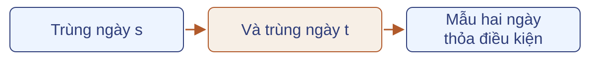
Kết luận: hai ngày khác nhau: $p^2=10^{-18}$, nhờ độc lập giữa các ngày.
Đơn vị đếm và số phép thử
Phép thử là một cặp người cùng một cặp ngày, đều không xét thứ tự.
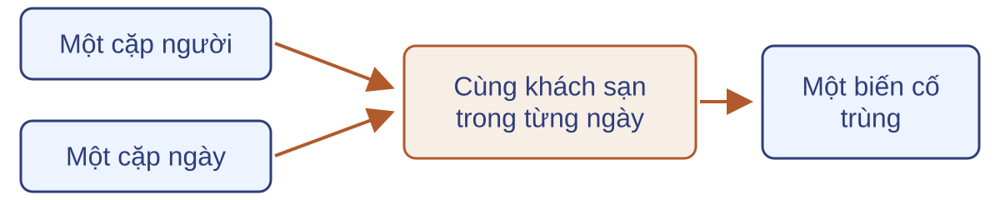
Số phép thử $=\binom P2\binom T2$
Một cặp người có thể trùng ở nhiều cặp ngày, nên số biến cố trùng khác số cặp người.
Kỳ vọng số biến cố trùng
Kỳ vọng là giá trị trung bình theo mô hình, không phải số đếm trên một kho cụ thể.
$X$ là tổng các chỉ báo trùng của mọi phép thử cặp người – cặp ngày.
$\begin{aligned}\mathbb E[X]&=\binom P2\binom T2p^2\\&=\binom{10^9}{2}\binom{1000}{2}10^{-18}\end{aligned}$
Kết luận: khoảng $249\,750$ biến cố khi mọi người chọn độc lập.
Mẫu trùng và căn cứ suy luận
| Kết quả đã có | Phạm vi kết luận |
|---|
| Thuật toán tìm đúng mẫu lưu trú trùng | mẫu thỏa điều kiện hai người, hai ngày |
| Mô hình nền cho kỳ vọng khoảng $249\,750$ | nhiều kết quả có thể do ngẫu nhiên |
| Một cặp xuất hiện trong kết quả | chưa suy được xác suất họ có phối hợp |
Câu hỏi: liệt kê đủ mọi mẫu trùng có xác nhận giả thiết độc lập không?
6.Tổng kết và tự kiểm tra
Muốn trả lời bài toán một triệu tài liệu, phải nêu giả thiết, bảo đảm và chi phí của từng kết quả.
Giả thiết không được bỏ · Chi phí xét mọi cặp · Bỏ sót · Kỳ vọng nền · Tài liệu đọc
Kết quả và giả thiết không được bỏ
| Kết quả | Giả thiết không được bỏ | Công thức hoặc thuật toán |
|---|
| Chi phí đọc ghi | khối chưa có trong bộ đệm | một lượt $F$ khối; đọc và ghi $2F$ |
| Đặc tả | tập hữu hạn, không rỗng | $R=\{(i,j):i<j,\ J(C_i,C_j)\ge\tau\}$ |
| Tính đúng | phép kiểm Jaccard chính xác | bất biến phần đã xét |
| Chi phí xét mọi cặp | danh sách đã sắp, cỡ $\le L$ | $O(N^2L)$ |
| Hậu kiểm ứng viên | mọi cặp đạt ngưỡng là ứng viên | kiểm chính xác |
| Kỳ vọng trùng nền | chọn đều, độc lập | $\binom P2\binom T2p^2\approx249\,750$ |
Câu trả lời cho vấn đề trung tâm
Nhu cầu: trả mọi cặp đạt ngưỡng trong $N=10^6$ tài liệu.
- Bảng 400 khối, bộ nhớ 20: quét lại tốn khối đọc ghi; sắp hoặc băm theo khóa (Bài 12, 15) giảm đọc lại.
- Phép kiểm chính xác: xét mọi cặp trả đúng $R$ sau $499\,999\,500\,000$ lần kiểm, $O(N^2L)$.
- Chữ ký MinHash, phân dải LSH giảm cặp; đủ khi mọi cặp đạt ngưỡng thành ứng viên.
- Mô hình lưu trú độc lập: kỳ vọng khoảng $249\,750$ biến cố trùng; Jaccard đạt ngưỡng chưa chứng minh sao chép.
Câu hỏi tự kiểm tra
Câu hỏi: trả lời và nêu kết quả đã dùng.
- Cặp $S,T$ có $J(S,T)=3/8$: xác định mọi ngưỡng $\tau$ để cặp thuộc $R$.
- Sắp tệp $F$ khối cần ba lượt, mỗi lượt đọc và ghi hết: tính số lần chuyển khối.
- Trong $\mathbb E[X]=\binom P2\binom T2p^2$: chỉ ra chỗ dùng độc lập và chỗ dùng tuyến tính kỳ vọng.
Nguồn và tài liệu đọc
Nguồn: Leskovec, Rajaraman, Ullman (2020), Mining of Massive Datasets, ấn bản 3, §1.2, tr.6–8; §1.3.4, tr.13; §3.1, tr.73–75.
Sách và trang chiếu của các tác giả: http://www.mmds.org.
Silberschatz, Korth, Sudarshan (2019), Database System Concepts, ấn bản 7, Chương 14–15.
Nelson, Gailly (1995), The Data Compression Book, ấn bản 2; Blum, Hopcroft, Kannan (2020), Foundations of Data Science, Chương 1–2.
Ghi chú bài giảng
Bài 02 (MapReduce): đọc MMDS Chương 2; ôn khóa–giá trị, phép nhóm, tính kết hợp và giao hoán của phép cộng.
7.Bài tập vận dụng
Muốn kiểm mô hình lưu trú, phải đổi quy mô, tiêu chuẩn trùng và đơn vị đếm rồi tính lại kỳ vọng.
Bài 1.2.1 · Bài 1.2.2 · Số phép thử · Kỳ vọng · Kết luận có điều kiện
Bài tập: phép đếm và suy luận
Hai bài tập MMDS dùng mô hình ngẫu nhiên để đánh giá số mẫu trùng.
| Bài tập | Các bước |
|---|
| 1.2.1 · Hồ sơ lưu trú | dựng mô hình gốc, thay quy mô, đổi sang ba ngày |
| 1.2.2 · Tập mặt hàng | đổi đơn vị đếm, tính trùng ngẫu nhiên, giới hạn kết luận |
Lời giải gồm số phép thử, xác suất, kỳ vọng và kết luận kèm giả thiết.
Bài tập: hồ sơ lưu trú, ba biến thể
Mô hình gốc: $P=10^9$, $T=1000$, $H=10^5$, $q=0{,}01$.
Câu hỏi: kỳ vọng số biến cố trùng (sách: số cặp nghi vấn) thay đổi thế nào khi:
(a) quan sát $2000$ ngày;
(b) quan sát $2$ tỷ người và có $200\,000$ khách sạn;
(c) chỉ báo khi cùng khách sạn trong ba ngày khác nhau.
Nguồn: MMDS, Bài 1.2.1, tr.8; áp dụng từng thay đổi riêng.
Bài tập: hồ sơ lưu trú (a), (b)
Câu hỏi: giải riêng hai phần (a), (b) của Bài 1.2.1, so với mô hình gốc.
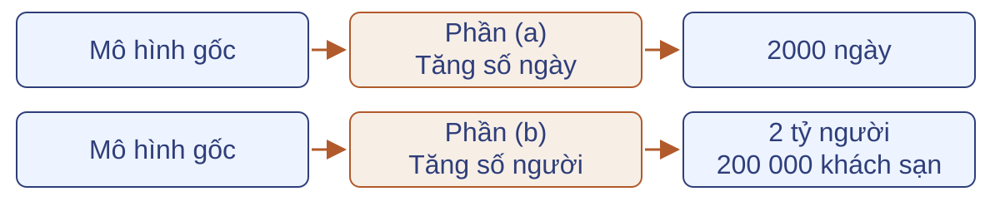
Các tham số không nêu trong từng phần giữ nguyên, gồm $q=0{,}01$.
Lời giải gồm số phép thử, xác suất mỗi phép thử, kỳ vọng và tỷ lệ so với cơ sở.
Nguồn: MMDS, Bài 1.2.1(a, b), tr.8.
Bài tập: hồ sơ lưu trú (c)
Câu hỏi: giải phần (c) của Bài 1.2.1 với quy mô gốc.
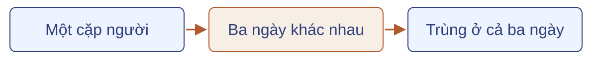
Chỉ báo một cặp nếu cùng khách sạn trong ba ngày khác nhau.
Khách sạn có thể khác giữa các ngày.
Lời giải gồm đơn vị đếm mới, kỳ vọng và ý nghĩa kết quả.
Nguồn: MMDS, Bài 1.2.1(c), tr.8.
Bài tập: cặp người mua cùng tập mặt hàng
$100$ triệu người; $100$ lượt/người/năm; mỗi lượt mua $10$ trong $1000$ mặt hàng.
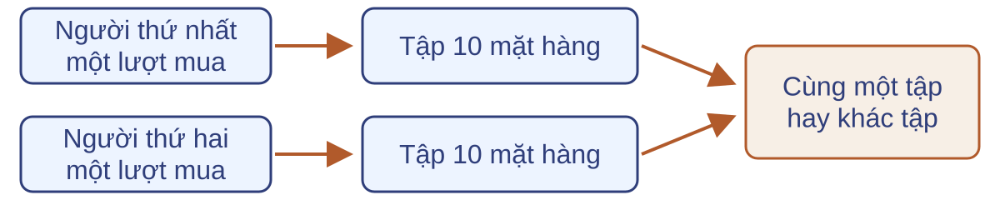
Giả thuyết của đề: một cặp khủng bố sẽ mua cùng tập 10 mặt hàng trong năm.
Câu hỏi: có nên cho rằng cặp mua cùng tập trong năm là cặp cần tìm không?
Nguồn: MMDS, Bài 1.2.2, tr.8.
Bài tập: tập mặt hàng, đơn vị đếm
| Hồ sơ lưu trú | Tập mặt hàng |
|---|
| cố định một cặp người | cố định một cặp người |
| chọn hai ngày khác nhau | chọn một lượt mua của mỗi người |
| trùng khách sạn trong từng ngày | hai tập 10 mặt hàng bằng nhau |
So mọi kết hợp lượt mua, không chỉ các lượt cùng số thứ tự.
Giả thiết: các lượt độc lập; mỗi lượt chọn đều một tập 10 trong 1000 mặt hàng.
Nguồn: MMDS, Bài 1.2.2, tr.8.
Bài tập: tập mặt hàng, bốn phần lời giải
Câu hỏi: hoàn tất Bài 1.2.2 bằng một lời giải có bốn phần.
- Đếm các cặp lượt mua của hai người khác nhau.
- Tính xác suất hai tập mặt hàng trùng nhau.
- Tính kỳ vọng số trùng dưới mô hình nền.
- Trả lời theo giả thuyết nguồn và nêu giới hạn suy luận.
Nguồn: MMDS, Bài 1.2.2, tr.8.